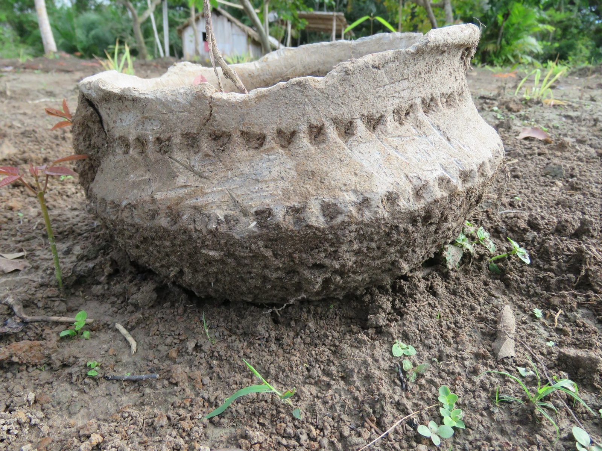
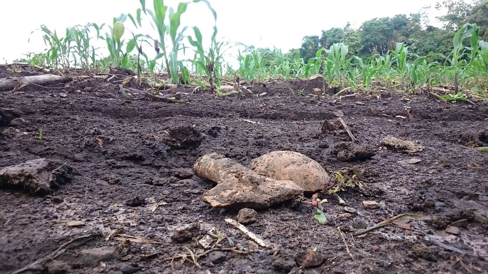
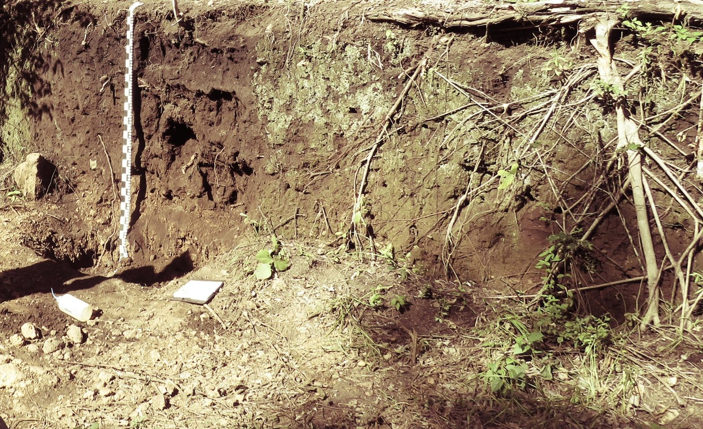
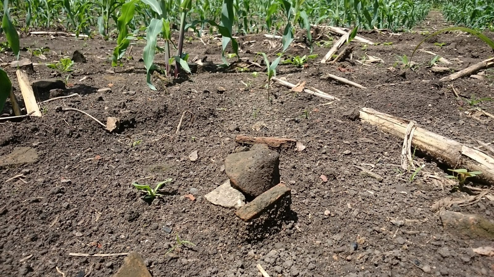

The Fading of El Dorado and the Unearthing of the Amazonian Dark Treasure
A perspective I started writing a long time ago and never finished, until now. It is an argument, not a review: some of it is established, some of it is a hypothesis we would like to see tested.
They never found what they were looking for
The conquistadors came to the Amazon looking for plunder. Small gold objects, prosperous riverside peoples and pottery so fine that the expedition's chronicler judged it better than anything made in Málaga fed the myth of El Dorado: a city hidden in the forest and holding the kind of wealth a sixteenth-century European court could understand.

A decorated ceramic vessel at a dark-earth site.
In 1542 Francisco de Orellana became the first European to travel the length of the river, and the Dominican friar Gaspar de Carvajal wrote down what they saw: long stretches of riverbank densely settled, large villages, roads leading inland and plenty of food [1]. Orellana returned in 1545 to conquer the province he had found and died near the river's mouth the following year. The violence of the expeditions that followed, and above all the epidemics that ran ahead of them, emptied much of what Carvajal had described. When later travellers came down the river they found far fewer people, and for four centuries Carvajal's account was read as exaggeration, or as a sales pitch for the next expedition.
It was not. Archaeology now shows complex, regionally organised settlements with roads, plazas, moats and bridges, for example in the Upper Xingu, built and maintained over centuries [2]. Estimates of the population of Amazonia in 1492, based partly on how much food the dark earths could have produced, are now in the order of at least eight million people [3]. And the forest itself still carries the marks: tree species domesticated by pre-Columbian peoples are far more likely to dominate today's forests than other species, especially around archaeological sites [4]. Ironically, the real wealth of these societies may never have been gold. It was knowledge, and much of it was written into the soil.
The dark treasure was just below their feet
Amazonian Dark Earths (ADEs), terra preta de Índio, are patches of black, fertile soil scattered across a basin where most soils are old, acidic and poor in nutrients. They are rich in charcoal-derived carbon, phosphorus and calcium, and they hold their fertility for centuries [5]. They are also archaeological sites: what defines an ADE in the field is the abundance of broken pottery mixed into the dark soil. Farmers seek them out to this day, and anyone who has worked with local communities has heard that on terra preta you can grow almost anything, in contrast with the surrounding forest soils.

Potsherds at the surface of a dark-earth field planted with maize.

A soil profile at a dark-earth site, with a measuring tape for scale.
ADEs have been studied intensively for decades, but mostly one discipline at a time. Soil chemists, archaeologists, anthropologists and ecologists have each built a part of the picture, and the parts still do not fit together well. Above all, the animals and microbes living in these soils have received much less attention than their chemistry.
By accident or by design?
The long-standing explanation is that ADEs formed around settlements from the slow accumulation of household waste: ash, charcoal, bones, food remains and broken pots. A second explanation is that they are, at least in part, the product of deliberate soil management for cultivation. The two are not mutually exclusive [6]. If ADEs were just aged rubbish heaps, though, why would hundreds of sites across the basin share such similar chemical and physical properties?
The question of intention, which this text was originally written to raise, has since gained strong support. Working with Kuikuro communities in the Upper Xingu, Schmidt and colleagues showed that ancient and modern dark earths are similar in composition and spatial layout, and documented present-day Indigenous practices (spreading ash, charcoal and organic waste on fields) that create dark earth today. They concluded that ADEs were made intentionally, and that they store large amounts of carbon [6]. Not everyone agrees on the origins: one study used isotopes to argue that some dark earths may have formed, at least in part, from alluvial and burning inputs that predate settlement [7]. The debate is healthy, and it is exactly where more disciplines are needed.
One component has been almost absent from it: the pottery itself. Potsherds are what define a site as an ADE, yet they are usually treated as debris. We would like to put forward a simple hypothesis: that broken ceramics are an active part of these soils. Solid, porous fragments change how water moves and is held, create pores and surfaces, and may offer protected microhabitats for roots, microbes and soil animals. Whether pots were broken and mixed in on purpose is an open question; whether the fragments change how the soil works is one that can be tested.

Pottery fragments mixed into dark earth between rows of maize.
Considering the soil biota
Soils are not built by chemistry alone. Earthworms, ants and termites, the soil's ecosystem engineers, move enormous amounts of soil, mix organic matter and charcoal into the mineral fraction, build stable aggregates and shape the conditions for every other organism. Earthworms and people have been building landscapes together for millennia, and earthworms are likely to have played a part in how ADEs formed and why they stay fertile [8]. Even without knowing every direct and indirect pathway, it is reasonable to expect that the engineers took part in making these soils.
Our own work, with colleagues in the Terra Preta de Índio Network, has started to fill this gap. We first brought together what was known about earthworms in anthropogenic soils and argued that they belong at the centre of how ADEs form and persist [8]. Wilian Demetrio then led a survey of soil macroinvertebrates at nine archaeological sites in three regions of Amazonia, comparing ADEs with nearby reference soils under old forest, young forest and agriculture. ADEs hold distinct communities: a “dirty footprint” of past human activity that persists today and is now threatened by land-use change [9]. Ana C. Conrado focused on the earthworms themselves. Combining DNA barcoding with morphology, she identified 51 taxonomic units among 970 earthworms collected in ADEs and reference soils under forests and monocultures, many of them found in only one soil type, and showed that Amazonian earthworm communities carry the marks of both ancient and recent human disturbance [10]. Altogether, molecular tools have described dozens of earthworm species from these sites, some of them new to science [11].
Can dark earth be recreated?
If ADEs were made, can their recipe be reproduced? Ricardo Leitão put the main ingredients to the test in a greenhouse pot experiment: an acidic, nutrient-poor tropical latosol, planted with maize, received biochar, manure and the earthworm Pontoscolex corethrurus, alone and in every combination [12]. By sequencing bacterial DNA, he followed three compartments separately: the bulk soil, the maize roots and the earthworm gut.
Each compartment kept a community of its own, although a shared core of bacteria accounted for about three quarters of all sequences. In the bulk soil, manure caused most of the change, largely through pH and nutrient availability, while earthworms raised exchangeable iron and made the bacterial networks more modular. Root communities were comparatively stable; the earthworm gut responded to manure, and biochar reorganised its network. The full terra preta-inspired mix of biochar, manure and earthworms did something none of the ingredients did alone: it produced bacterial communities that were not simply the sum of their parts, and the strongest overall plant response, even though manure was the only single ingredient that improved maize growth by itself. Under that mix, Bradyrhizobium became abundant in both the soil and the earthworm gut [12].
The lesson fits the argument of this piece: the fertility of dark earth seems to emerge from interactions between charcoal, organic matter and soil animals, rather than from any one of them. The biota is part of the recipe.
These biological signatures, the product of human history layered on current land use, can only be read if biology, soil science, archaeology and local knowledge work together. That integration is what will tell us how vulnerable or resilient ADEs are, and how they can be conserved or used wisely.
Learning from the past
Ancient dark earths and the domesticated forests around them show that Indigenous peoples managed life in the Amazon long before chainsaws and synthetic fertilisers. The researchers who documented the intentional creation of dark earth make the same point: Indigenous knowledge has a great deal to offer the sustainable management of tropical forests today [6]. The treasure the conquistadors were looking for was there all along, just below their feet. It was never gold, and the people who made it are still here.
References
- Medina, J. T. (ed.) (1934). The Discovery of the Amazon according to the account of Friar Gaspar de Carvajal and other documents. American Geographical Society, New York. (Spanish edition first published 1894.)
- Heckenberger, M. J., Kuikuro, A., Kuikuro, U. T., et al. (2003). Amazonia 1492: pristine forest or cultural parkland? Science, 301, 1710–1714. doi:10.1126/science.1086112
- Clement, C. R., Denevan, W. M., Heckenberger, M. J., Junqueira, A. B., Neves, E. G., Teixeira, W. G., & Woods, W. I. (2015). The domestication of Amazonia before European conquest. Proceedings of the Royal Society B, 282, 20150813. doi:10.1098/rspb.2015.0813
- Levis, C., Costa, F. R. C., Bongers, F., et al. (2017). Persistent effects of pre-Columbian plant domestication on Amazonian forest composition. Science, 355, 925–931. doi:10.1126/science.aal0157
- Glaser, B., & Birk, J. J. (2012). State of the scientific knowledge on properties and genesis of Anthropogenic Dark Earths in Central Amazonia (terra preta de Índio). Geochimica et Cosmochimica Acta, 82, 39–51. doi:10.1016/j.gca.2010.11.029
- Schmidt, M. J., Goldberg, S. L., Heckenberger, M., et al. (2023). Intentional creation of carbon-rich dark earth soils in the Amazon. Science Advances, 9, eadh8499. doi:10.1126/sciadv.adh8499
- Silva, L. C. R., Corrêa, R. S., Wright, J. L., et al. (2021). A new hypothesis for the origin of Amazonian Dark Earths. Nature Communications, 12, 127. doi:10.1038/s41467-020-20184-2
- Cunha, L., Brown, G. G., Stanton, D. W. G., et al. (2016). Soil animals and pedogenesis: the role of earthworms in anthropogenic soils. Soil Science, 181, 110–125. doi:10.1097/SS.0000000000000144
- Demetrio, W. C., Conrado, A. C., Acioli, A. N. S., et al. (2021). A “Dirty” Footprint: macroinvertebrate diversity in Amazonian Anthropic Soils. Global Change Biology, 27, 4575–4591. doi:10.1111/gcb.15752
- Conrado, A. C., Demetrio, W. C., Stanton, D. W. G., et al. (2023). Amazonian earthworm biodiversity is heavily impacted by ancient and recent human disturbance. Science of the Total Environment, 895, 165087. doi:10.1016/j.scitotenv.2023.165087
- CORDIS (2018). Earthworms – integral ecosystem engineers (results of the HookaWorm Marie Skłodowska-Curie project). cordis.europa.eu
- Leitão, R., Ferreira, T., Ferreira, N. G. C., Orozco-terWengel, P., Kille, P., Brown, G. G., & Cunha, L. (2026). Compartment-specific responses of soil, root, and earthworm gut microbiomes to Terra Preta de Índio–inspired amendments in a tropical latosol. Applied Soil Ecology, 225, 107278. doi:10.1016/j.apsoil.2026.107278